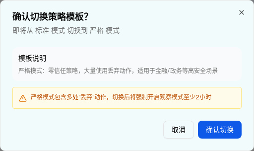

| 所属组件 | 2.2 认证协议检查 AuthProtocolCheck |
| 主文件 | filter-rules-identity-auth-spoofing/index.html |
| 触发路径 | 层级 0 → 点击「宽松 / 标准 / 严格 / 自定义」中非当前模板按钮 → setPendingTemplate + setShowTemplateChangeDialog(true) |
| demo 源码 | identity-strategy-page.tsx L1086-L1128 |
| 点击当前模板 | 无响应（if (tpl.key !== authPolicyTemplate) 守卫） |
下方是完整的认证协议检查区。点击任一非当前模板按钮即可弹出确认 Dialog；点击「取消」关闭，点击「确认切换」应用模板。
点击「严格」→ 弹窗含 amber 警告；点击「自定义」→ 弹窗无警告；确认后动作下拉解除禁用
DMARC验证依赖SPF或DKIM对齐结果。如果SPF和DKIM均被禁用，DMARC验证将始终失败。
PTR检查在连接层执行，但在此处统一配置策略。

| 元素 | 类型 | 文案 | 交互行为 |
|---|---|---|---|
| 标题 | DialogTitle | 确认切换策略模板？ | — |
| 描述 | DialogDescription | 即将从 标准 模式 切换到 严格 模式 | 文案随 当前模板/pendingTemplate 变化 |
| 模板说明块 | div.bg-gray-50 | 严格模式：零信任策略，大量使用丢弃动作，适用于金融/政务等高安全场景 | 按 pendingTemplate 切换文案 |
| amber 警告 | div.bg-amber-50 + AlertTriangle | 严格模式包含多处"丢弃"动作，切换后将强制开启观察模式至少2小时 | 仅 pendingTemplate === "strict" 时渲染 |
| 取消 | Button variant=outline | 取消 | 关闭 Dialog，不改模板 |
| 确认切换 | Button | 确认切换 | setAuthPolicyTemplate(pending)；strict 时额外 setObserveMode(true) |
| 比对项 | demo 实际 DOM | 嵌入 spec 的 HTML | 是否一致 |
|---|---|---|---|
| 根节点 | div[role=dialog] | div[role=dialog]（预览内以 .spec-dialog-overlay 就地渲染） | ⚠ 有意差异 |
| 节点总数 | 22 | 22 | ✅ |
| 直接子节点数 | 4 | 4 | ✅ |
| amber 警告块 | 已渲染 | 已渲染 | ✅ |
| 按钮 | 取消 / 确认切换 | 取消 / 确认切换 | ✅ |
渲染差异说明：demo 的 Radix Dialog 通过 Portal 挂到 document.body。spec 预览把它就地渲染在 .component-preview 内（position:absolute 遮罩），以便在文档中直接操作；DOM 层级因此不同，内容一致。
| 比对项 | demo 实际 DOM | 嵌入 spec 的 HTML | 是否一致 |
|---|---|---|---|
| 节点总数 | 16 | 16 | ✅ |
| amber 警告块 | 未渲染（仅 strict 才有） | 未包含 | ✅ |
| 模板说明文案 | 自定义模式：完全手动控制，脱离模板保护，需自行评估风险 | 同 | ✅ |
节点数由 22 降至 16，差值即 amber 警告块（含 AlertTriangle svg 的 6 个节点）。
点击「确认切换」后，demo 只更新模板标签与徽标（并在 strict 时开启观察模式），不会批量改写各协议的检查结果动作。浏览器实测：标准 → 自定义切换前后，SPF 四行动作值完全相同（阻断/隔离/标记/标记）。这与 spec §7 TC006/TC007/TC008「选择模板 → 所有协议动作被设置」相矛盾，详见主文件 §9 差异 #2。